AJMER & PUSHKAR – Faith Meets Heritage
Ajmer and Pushkar are two famous pilgrimage towns just 15 km apart. Ajmer is renowned for the sacred Ajmer Sharif Dargah, while Pushkar is one of the world's oldest cities and home to the rare Brahma Temple and the holy Pushkar Lake.
AJMER
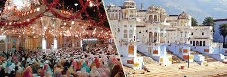
INTRODUCTION:
South west of Jaipur, Ajmer is an oasis wrapped in the green hills. The city was founded by Raja Ajay Pal Chauhan in the 7th Century A.D. Ajmer is a popular pilgrimage centre for the Muslims as well as Hindus. Especially famous is the Dargah Sharif-tomb of the Sufi saint Khwaja Moinuddin Chisti, which is equally revered both by the Hindus and the Muslims. Ajmer is a centre of culture and education. Ajmer is also the base for visiting Pushkar (14 km.) which has the distinction of having the only Brahma temple in the world. The Picturesque Pushkar Lake is a sacred spot for Hindus.
HOW TO GET THERE
By Air
:-The
nearest airport is that of Jaipur. i.e. 145 Kms
By
Road :-The
state transport has its bus services from all over Rajasthan and also
from Delhi.
By Train-
Ajmer
Junction on Main Line of Delhi – Ahmedabad Route , There are many
express trains like Shatabdi, Rajdhani, Express trains connect
to all over india,
DISTANCE FROM MAJOR CITIES
Ajmer |
- |
New Delhi |
392 Kms |
Ajmer |
- |
Mumbai |
1071 Kms |
Ajmer |
- |
Jaipur |
131 Kms |
Ajmer |
- |
Udaipur |
274 Kms |
Ajmer |
- |
Jodhpur |
205 Kms |
Ajmer |
- |
Jaisalmer |
490 Kms |
BEST TIME TO VISIT: - March to May
ATTRACTIONS OF AJMER
Ajmer-e-Sharief Dargah
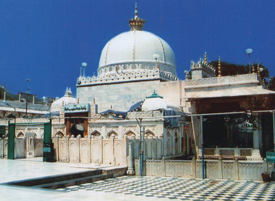
At the foot of a barren hill, is situated India’s most important pilgrimage center for people from all faiths. It is the splendid tomb of the Sufi saint Khawaja Moinuddin Chisti more popularly known as Khawaja Saheb or Khawaja Sharif.
URS FAIR
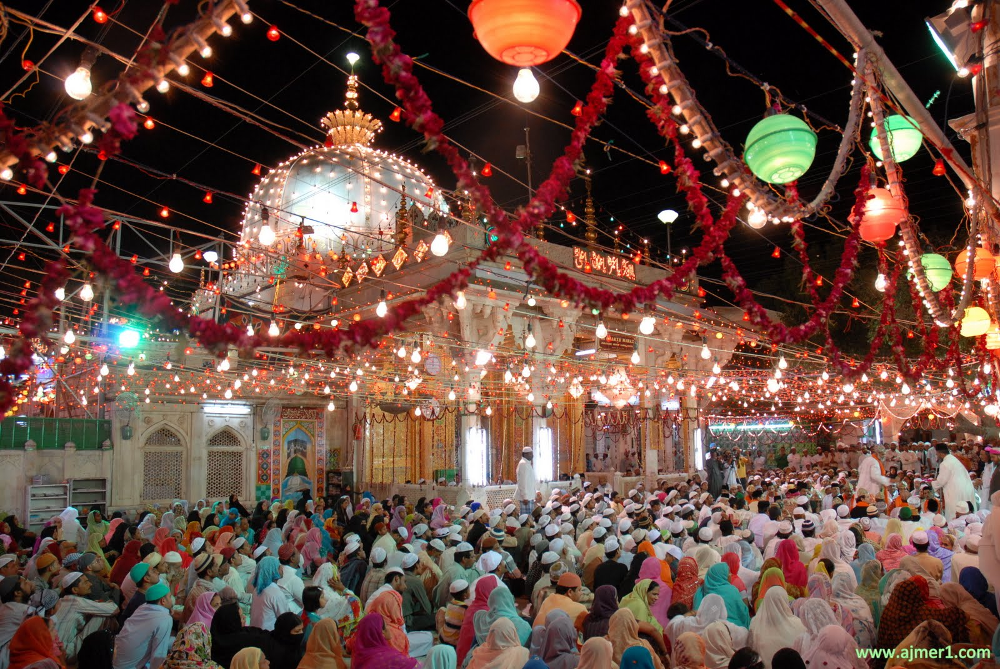
The Dargah Sharif in Ajmer is the place where the Saint's mortal remains lie buried and is the site of the largest Muslim fair in India. Devotees belonging to different communities gather from all parts of the subcontinent to pay homage to the Khwaja on his Urs (death anniversary) during the first six days of 'Rajab' (seventh month of the Islamic calendar.)
Adhai Din Ka Jhonpra
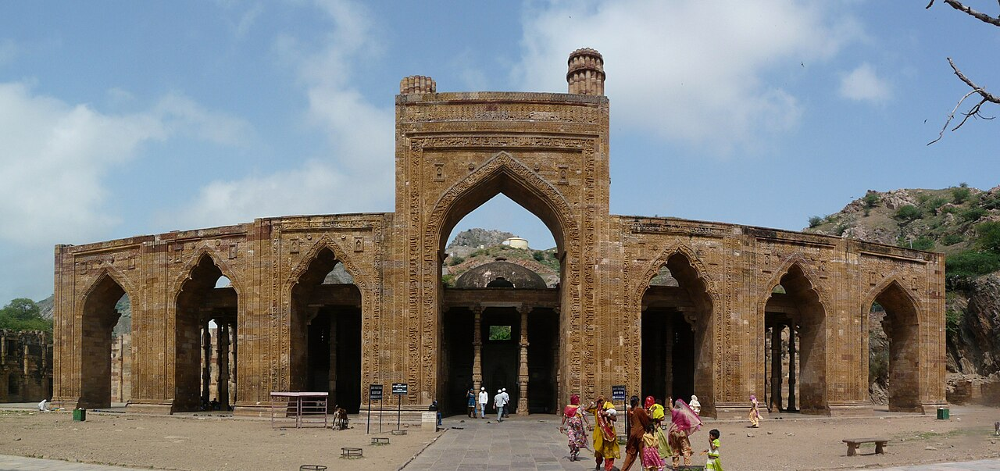
An ancient Indo-Islamic monument known for its impressive arches and intricate carvings.
Ana Sagar Lake
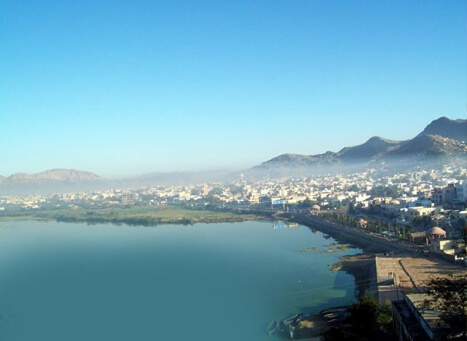
A beautiful artificial lake built in the 12th century,This lake was built by Anaji during 1135-1150 AD. Later the Mughal Emperors made additional constructions to beautify the lake. The 'Baradari', a marble pavilion was built by Shah Jahan and the Daulat Bagh Gardens were laid by Jehangir.
Govt. Museum – Ajmer
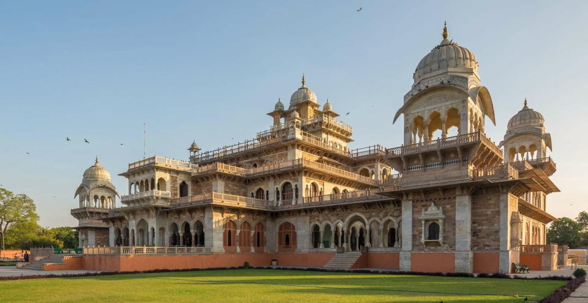
The Rajputana Museum as it is significantly named, has in its galleries important exhibits from almost all the princely states. There is a library attached to his museum, which contains rare books and important historical publications.
Taragarh Fort
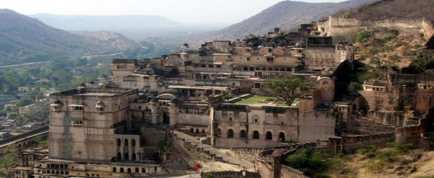
Built in the 7th century by Ajaipal Chauhan, the fort gives a bird's eye view of the city. Taragarh Fort or the 'Star fort' is situated on a hill .
Nasiyan (Jain Temple)
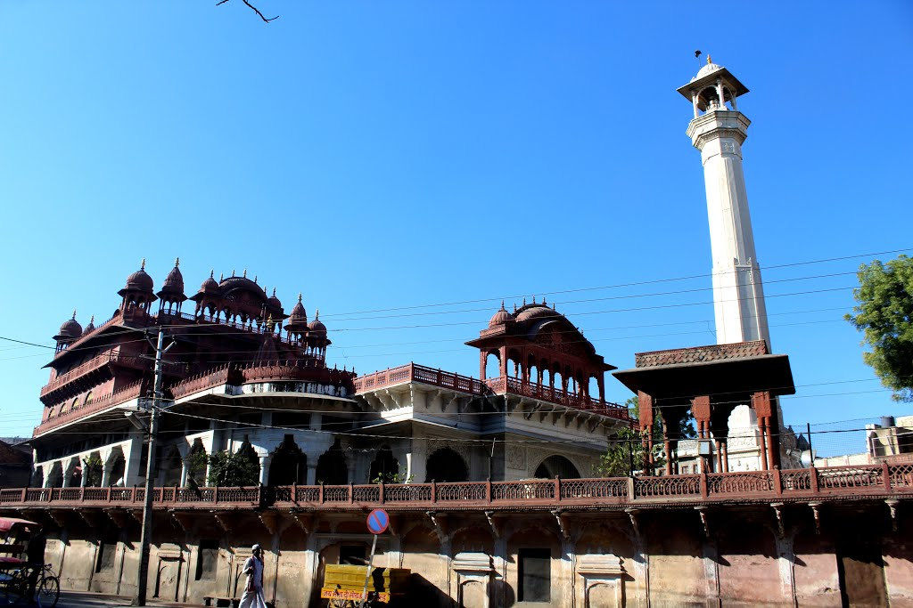
This red coloured Jain temple was built in the late 19th century. The wooden gilt in the double storied hall depicts scenes from the Jain mythology.
PUSHKAR
The holy City of Pushkar is often described as the king of pilgrimage sites in India. The town is located at the shores of the Pushkar Lake, which was created by the tears of Lord Shiva. The town is one of the oldest cities of India. The town is famous for its temples and various Ghats which are frequented by hundreds of visitors during the annual bath. The water of the lake is considered sacred and thus is responsible for the town’s repute as a pilgrimage spot.
1. Brahma Temple
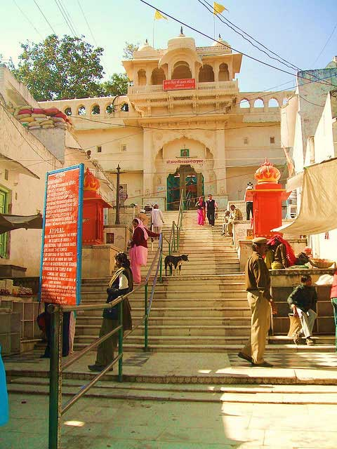
Those who follow Hinduism believe that Lord Brahma is the Creator and worship him. In spite of the importance attached to Lord Brahma, there are only three temples for him all over the world and only one in India. Pushkar gains additional importance as Brahma Temple is seen here. The temple and its surroundings are unique. The temple structure is built of marble and it is beautiful.
2. Pushkar Lake
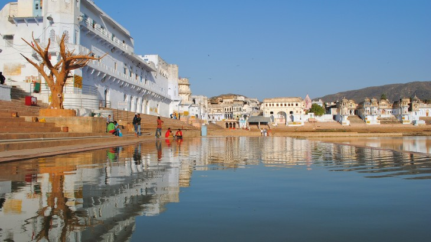
It gains importance among spiritual travelers who aim to have a holy dip in the lake, which is considered a holy place and the King of ‘Trithas’. It is believed that having a holy dip here is equivalent to doing meditation and prayer for a hundred years. Hence, this is most frequented by people who follow a particular faith. Surrounded by 400 temples and 52 palaces, the lake still looks serene and calm.
3. Man Mahal
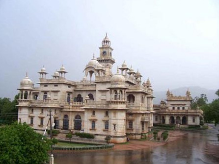
Man Mahal is a magnificent palace that was constructed by Raja Man Singh of Amber. It is situated on the eastern side of Sarovar. The palace flaunts the uniqueness of Rajasthani style of architecture. It is now used as a tourist bungalow and it is under the control of Rajasthan Tourism Development Corporation.
4. Pushkar Camel Safari Tour
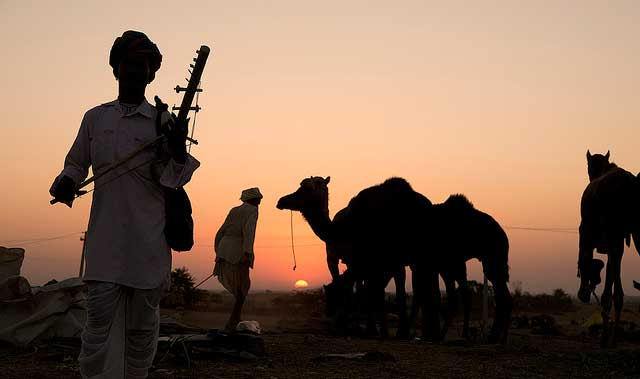
Pushkar Camel Safari is tailor made to suit the needs of the visitors. The safari tour takes you to through the desert and by sunset, you will find yourself on the sand dunes, a perfect place to be at that time of the day. You can opt for the sight of sunrise as well.
5. Camel Fair OR The Pushkar Fair
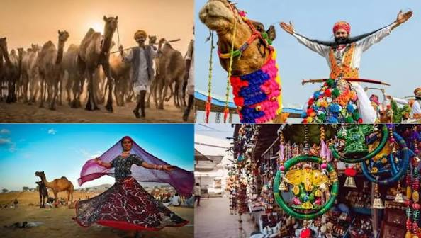
The most illustrious attraction of Pushkar is the annual Camel Fair. It is a five day fair held where people buy and sell livestock. But that’s not all; the fair is home to a large no. of tourist crowd that is attracted by the music, dance and various events that are held here during the camel fair. Camel races are one of the major attractions as well.
6.Savitri Temple:
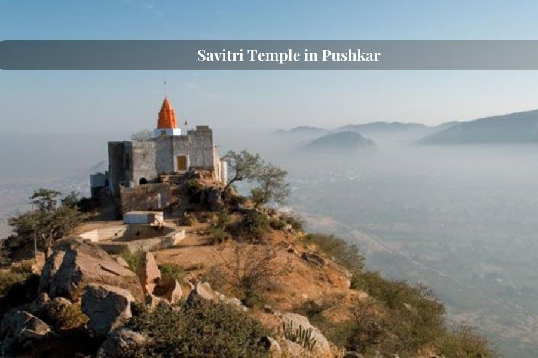
Perched on a hill, this temple is dedicated to Goddess Savitri, Offering panoramic views of the Pushkar town and the surrounding desert.